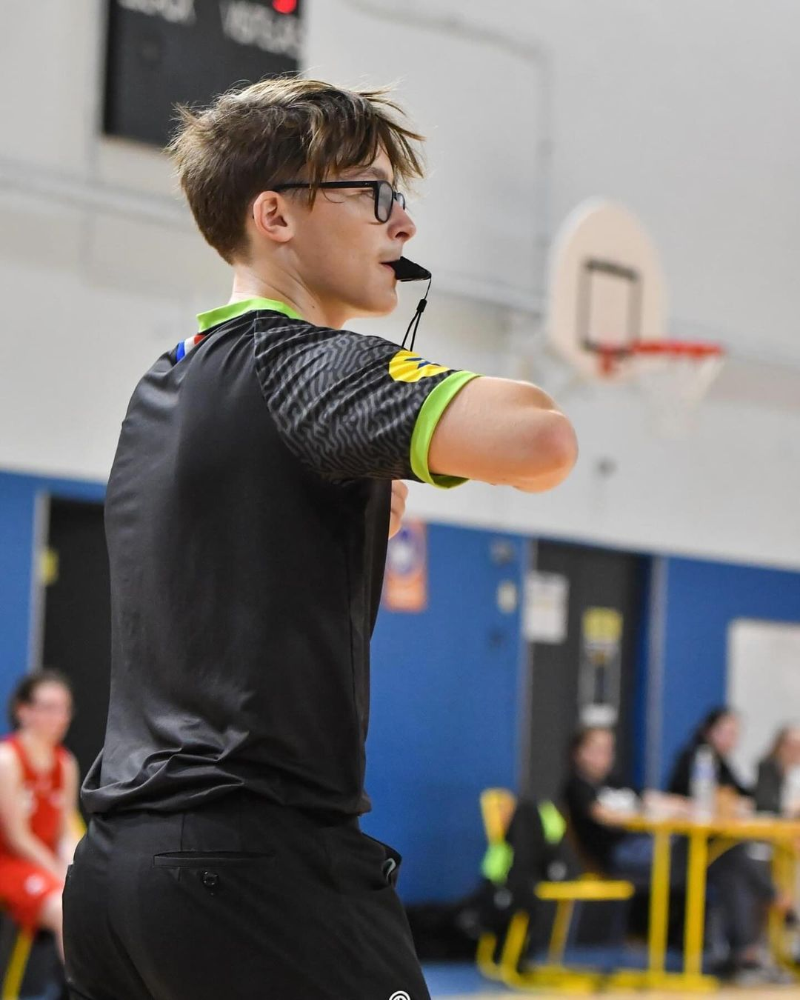
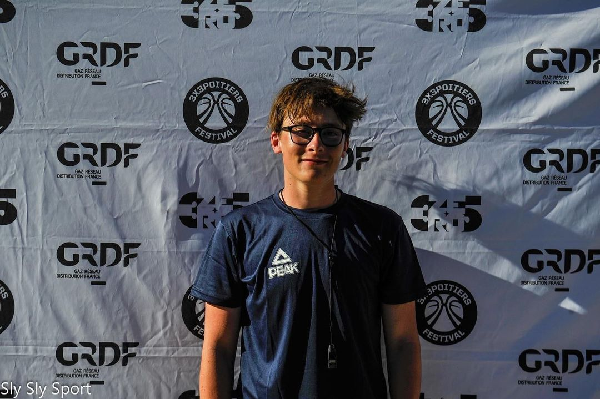
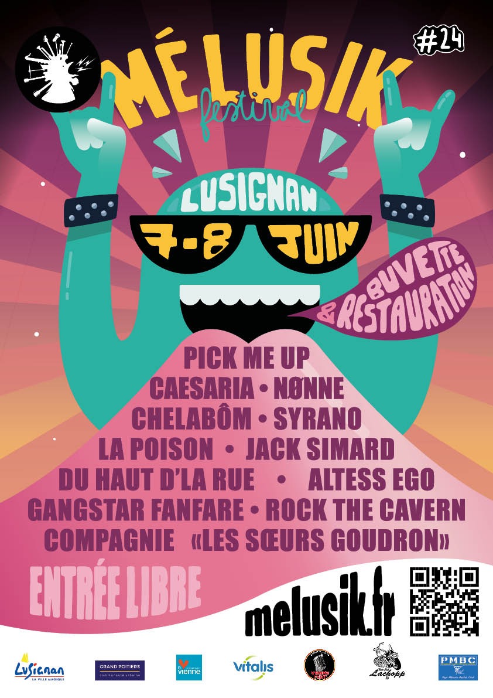
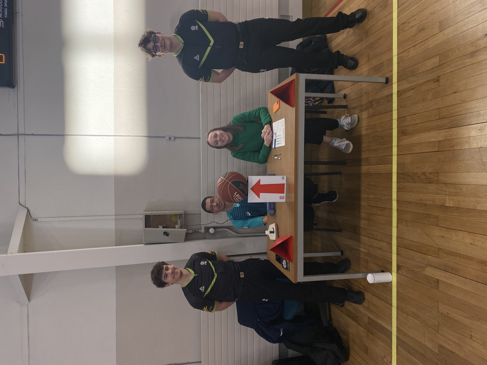
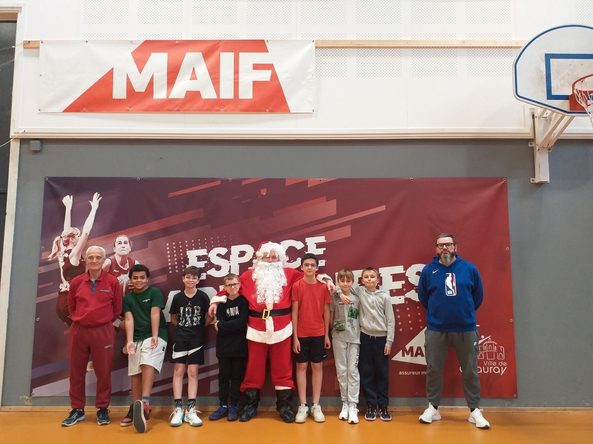
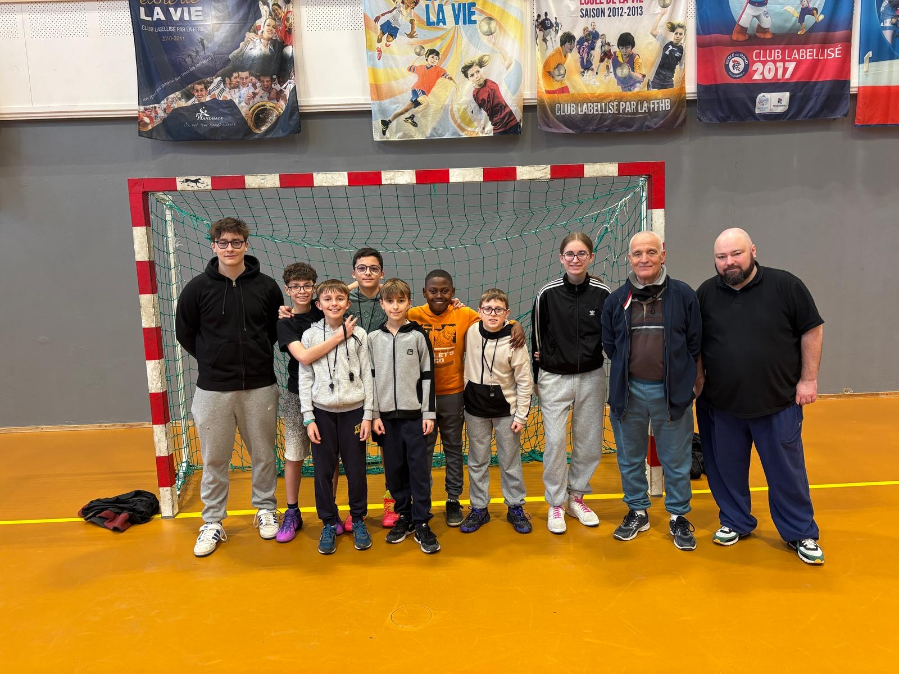

Voir combien de matchs et de km j'ai cumulés chaque mois, trimestre ou saison, afin de repérer les pics et les creux d'activité.
Bonjour ! Je m'appelle Elliot Feroux, j'ai 18 ans et je suis passionné par l'informatique et les données. J'habite près de Poitiers et je fais mes études à Niort, où je suis en première année d'un Bachelor Universitaire en Science des Données (anciennement Statistique et Informatique Décisionnelles).
Dans ce programme, j'apprends des compétences importantes comme la programmation, les statistiques, et l'utilisation d'outils de data science.
En dehors de mes études, je vais à la salle de sport, je suis arbitre de basket-ball et je m'investis dans le monde associatif. J'apprécie aussi la musique, le sport, voyager et profiter de l'instant présent, ce qui m'aide à rester équilibré et motivé.
Je suis toujours à la recherche de nouvelles opportunités pour apprendre et travailler sur des projets passionnants. Parcourez mon portfolio pour voir ce que j'ai réalisé et n'hésitez pas à me contacter via ma page contact.

De l'âge de 8 ans à 18 ans, j'ai joué en club de basket, d'abord au club de Ménigoute (79), puis à Lusignan (86). C'était ma passion. Je n'avais pas un esprit de compétition ; je jouais pour m'amuser et prendre le plus de plaisir possible, peu importe le résultat.
À 17 ans, je me suis reconverti dans l'arbitrage après une formation d'un an qui m'a permis d'accéder au niveau départemental. Après un an à ce niveau, j'ai décidé de suivre une formation pour arbitrer au niveau régional. Aujourd'hui, j'ai passé tous les examens et j'attends les résultats pour le 15 juin. Mon ambition est d'arbitrer au plus haut niveau possible.
L'arbitrage en 5x5 est désormais ma passion. Il m'a permis de gagner en confiance, de me surpasser et de rencontrer des personnes formidables. Je ne le remercierai jamais assez pour cela.

Le basket-ball 3x3 est une discipline spéciale qui fera partie des Jeux Olympiques de Paris. C'est une forme de basket-ball de rue. J'ai découvert cette discipline il y a un peu plus d'un an. L'arbitrage et la gestion des acteurs sont différents de ceux du basket-ball traditionnel.
Depuis, j'ai arbitré lors de nombreux tournois, tels que les Jeux Européens Inter-Entreprises de Bordeaux, l'Urban PB de Poitiers, ou encore le Tournoi International du Grand Cognac. Cette discipline me passionne tout autant, car elle me permet de voyager davantage, de profiter du basket en plein air, et même de découvrir de nouveaux horizons.

J'y regroupe mes convocations d'arbitrage dans une interface pensée comme un vrai cockpit personnel : activité dans le temps, kilomètres, compétitions, déplacements par club et carte choroplèthe de mes zones d'arbitrage.
Le but est d'avoir un outil concret pour suivre ma saison, voir les tendances rapidement et repérer plus facilement les anomalies dans les données.
Accéder au dashboardMes parents m'ont toujours immergé dans la musique, mon père étant guitariste et ma mère accordéoniste et chanteuse. Personnellement, je me contente d'écouter de la musique. Ils ont toujours été bénévoles dans une association musicale, et depuis deux ans, je le suis également. Lors de l'édition 2023, j'étais bénévole à la restauration, où je préparais les sandwiches et m'occupais de la logistique en arrière-plan. Je n'ai pas vraiment apprécié cette tâche car il n'y avait pas de contact avec les clients et je ne pouvais pas profiter de la musique.
Cette année, j'ai été à l'accueil, en charge de servir les clients en jetons, de gérer les retours de caution, et de répondre à toutes les questions des festivaliers. J'ai beaucoup aimé ce poste car il impliquait beaucoup de contact avec les clients, la gestion d'argent, et des responsabilités. De plus, cela m'a permis de travailler sur ma confiance en moi et de veiller à ce que les festivaliers aient une bonne impression du festival dès leur arrivée.

Depuis le début de l'année universitaire 2024-2025, j'arbitre à l'université. Je me rends souvent à Poitiers le jeudi après-midi afin d'arbitrer des matchs aux niveaux académique et inter-académique. J'ai notamment pu arbitrer la finale inter-académique des écoles d'ingénieurs avec les équipes de l'ENSMA, ainsi qu'avec celles de Bordeaux et de Pau.
Les matchs inter-universitaires me permettent de gagner en expérience, car on y retrouve des joueuses et joueurs de niveaux variés. J'arbitre actuellement en Régional 3 et je peux me retrouver face à des joueurs de niveau Régional 1, voire Nationale 3. C'est toujours de l'expérience à prendre, et je m'y plais énormément. Cela me permet de pratiquer encore davantage ma passion.
J'arbitre certains jeudis après-midi, notamment les finales académiques de l'ancien Poitou-Charentes. Je dois aussi arbitrer les finales inter-académiques à Bordeaux le 30/04 en Nouvelle-Aquitaine.

J'ai co-fondé l'AMAM, une structure rattachée au Pays Mélusin Basket Club dont l'objectif est d'organiser des événements autour du basketball pour les clubs de la région. Ces événements servent aussi de supports de formation à l'arbitrage. On a organisé la Journée de Gala Mélusine 2025, notre premier événement, et l'idée est de pérenniser ce format sur les prochaines saisons. Ce que j'aime dans ce projet c'est tout ce qui gravite autour du sportif. Contacter les clubs, échanger avec les gens, gérer la logistique, et aussi toute la partie visuelle que j'ai réalisée entièrement moi-même (affiches, communication). Au-delà de l'organisation, c'est surtout une aventure humaine qui m'apporte énormément.
J’ai participé en tant que formateur à une école d’arbitrage organisée à Chauray. Dans ce cadre, j’ai encadré de jeunes arbitres en leur transmettant les bases essentielles de l’arbitrage, aussi bien sur le plan théorique que pratique. J’ai notamment animé des échanges autour des règles du jeu (fautes sur porteur de balle, notion de cylindre, position légale de défense) et proposé des mises en situation pour développer leur prise de décision. Cette expérience m’a permis de renforcer mes compétences pédagogiques, ma capacité à expliquer des notions complexes de manière claire, ainsi que ma gestion d’un groupe de jeunes en apprentissage.

